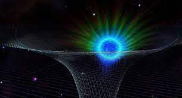
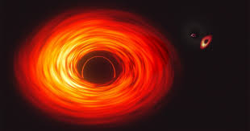

ABOUT The
Black holes
Black holes
Only the most massive stars—those of more than three solar masses—become black holes at the end of their lives. Stars with a smaller amount of mass evolve into less compressed bodies, either white dwarfs or neutron stars.
GENERAL RELATIVITY

General relativity is physicist Albert Einstein's understanding of how gravity affects the fabric of space-time.
The theory, which Einstein published in 1915, expanded the theory of special relativity that he had published 10 years earlier. Special relativity argued that space and time are inextricably connected, but that theory didn't acknowledge the existence of gravity.
Einstein spent the decade between the two publications determining that particularly massive objects warp the fabric of space-time, a distortion that manifests as gravity, according to NASA.
How It Begins
One way to make a black hole is to have a massive star collapse at the end of its life. Prof. Subrahmanyan Chandrasekhar was the first to calculate that when a massive star burns up all its fuel, it will collapse. The idea was ridiculed at first, but other scientists calculated that the star continues forever to fall inward toward its center—thus creating what we called a black hole.
There’s another type of black hole called a supermassive black hole. These are way too massive to have been created by one star collapsing; it’s still a mystery how they form. Black holes can eat other black holes, so it’s possible that the supermassive ones are made of many small black holes merged together. “Or perhaps these big black holes were especially hungry, and ate so much of their surroundings that they grew to enormous size,” said Prof. Holz.
Research on ISS


The defining feature of a black hole is the appearance of an event horizon—a boundary in spacetime through which matter and light can pass only inward towards the mass of the black hole. Nothing, not even light, can escape from inside the event horizon.[82][83] The event horizon is referred to as such because if an event occurs within the boundary, information from that event cannot reach an outside observer, making it impossible to determine whether such an event occurred.[84]
In its third decade of continuous human presence, the International Space Station has a far-reaching impact as a microgravity lab hosting technology, demonstrations, and scientific investigations
from a range of fields. Results are compounding and new benefits are emerging.